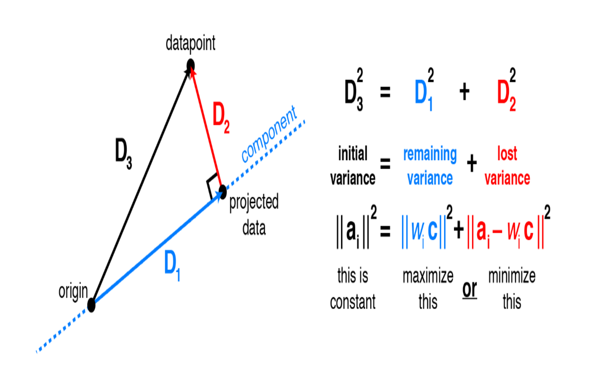

Whenever we start a data analysis problem, one of the most initial steps that we undergo is some sort of exploratory data analysis of raw data at hand. Exploring your data is a crucial step as until you have basic understanding of your data viz structure of it, it's somewhat difficult to know whether the data you've is suitable for the task we gotta perform or is something from which we can draw any insights. In real world problems, raw data consists of many features. On one hand it's good to have multiple features as it allows our models to generalize well, but on the other it's bad as we can only work things out for visualizations upto 3 dimensions. So how can we go on exploring our data? The answer to this problem is Dimensionality Reduction. Dimensionality Reduction helps us out by providing a simpler and more compact representations of our original raw data to either aid our understanding or to provide useful input for the incoming stages of analysis. Here we'll focus on two such techniques one by one.
What happens is, whenever we have a problem at hand or we're trying to understand some underlying phenomenon, in order to do so we measure various quantities potentially related to it. In most cases, if we knew exactly what to measure in advance, we might be able to find some simple relationships in our data. Say, when we have a mensuration problem, most of the time we know which formula will work things out for us. So we just try to find values which can be plugged into formula equation. But sadly, generally we aren't that fortunate and don't know what we got to measure, so we often end up measure anything that might be relevant and end up having irrelevant or redundant signals in our measurements. To make this a bit more concrete, let's try to generate a 2-dimensional dataset which can explain what we just proposed:

Now it's pretty evident from the plot that there's a linear relationship between the 2 variables, thus we probably don't need to include both of them as 𝑥1 can be easily explained by 𝑥2 and vice versa.
Principal Component Analysis (PCA)
Now you know that there might exist some features which may be redundant as their behavior can be explained by other features, we should be able to summarize the data with less features. So, what PCA does to solve this issue is: Instead of simply picking out the useful features and discarding the others it uses a linear combination of the existing features and constructs some new features that are better alternative representation of original data. In our 2-dimensional dataset above, PCA will try to pick the best single direction, or often referred as first principal component in 2D, and project our points onto that single direction. Immediately the next question arises, out of the many possible lines in 2-dimension, which line should we pick?

It turns out that, there are couple of different answers to this question. First of them would be that we're looking for some features that strongly differ across data points, thus PCA looks for features that captures as much as variation across data points as possible. Second answer would be that we're looking for the features that would allow us to reconstruct the original features. Imagine that we come up with a feature that has little do with the original features we had, if we were to use this new feature, there's no way we can relate this to the original features. So no point in taking this up! Hence, PCA looks for features that minimizes the reconstruction error.
So, behavior of PCA can be explained by both these outlooks; shown in figure above. Here black dot represent original data points, black line represents the projected line, red dot on the left represents the points on the projected line and the red line represents the reconstruction error.
Suprisingly, it turns out that these 2 objectives are equivalent and PCA can do both of them simulatenously. To see, why minimizing the sum of the squared residuals is equivalent to maximizing variance consider the 2 dimension visualization below:

Consider a datapoint. The contribution of this specific data point to the total variance is the squared Euclidean length. Applying the Pythagorean theorem shows that this total variance equals the sum of variance lost(thr squared residual) and variance remaining. Thus, it's equivalent to either maximizing remaining variance or minimizing lost variance to find the principal components.
For full implementation of PCA from scratch!Important Takeaways
For the identification of underlying patterns existing in our data, we often look for variation across observations to distinguish them from one another. Hence it seems reasonable to be able to find a succinct representation that best captures the variation in our initial raw data. PCA, in particular looks to explain our data via it's maximum directions of variance. By compressing a higher dimensional dataset into a lower one, while still retaining most of the variance(information) allows us to:
- Perform Visualizations by reducing the number of dimensions for a high-dimensional dataset.
- Speeds up Machine Learning Algorithms by reducing the amount of memory required to train the algorithms with less number of features.